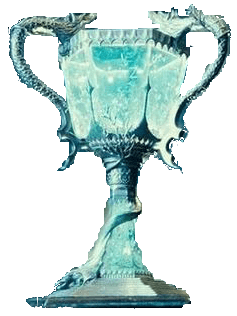
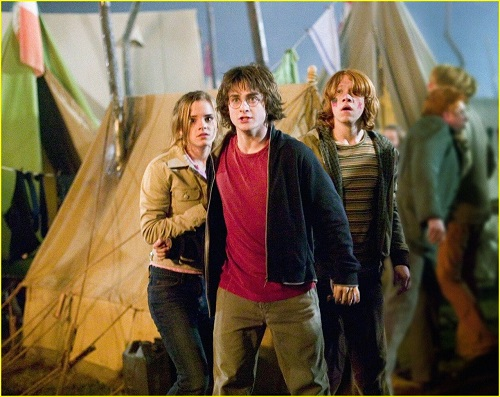
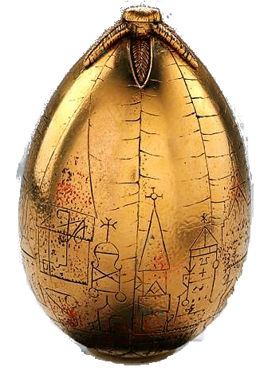
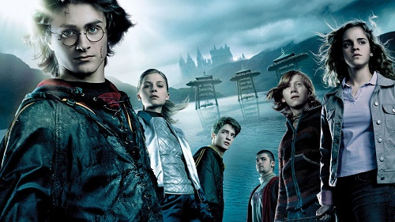

Harry Potter y el Cáliz de Fuego
Tras otro abominable verano con los Dursley, Harry se dispone a iniciar el cuarto curso en Hogwarts, la famosa escuela de magia y hechicería. A sus catorce años, a Harry le gustaría ser un joven mago como los demás y dedicarse a aprender nuevos sortilejios, encontrarse con sus amigos Ron y Hermione y asistir con ellos a los mundiales de quidditch.


Sin embargo al llegar al colegio le espera una gran sorpresa (el torneo de los tres magos), que lo obligrá a enfrentarse a los desafíos más temibles de toda su vida. Si logra superarlos habrá demostrado que ya no es un niño y que está preparado para vivir las nuevas y emocionantes experiencias que el futuro le depara.

